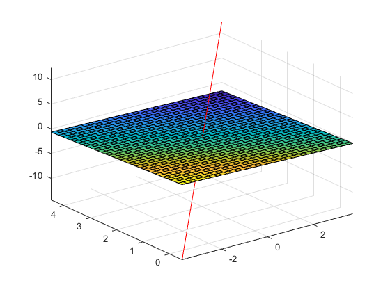
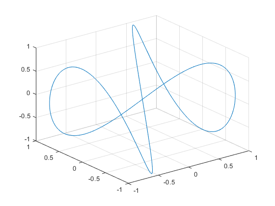

clear all; %Name: Yizhan Ao MATH241 project #1
1(a)
syms f x f = x^4 - 3*x^3 + 7*x^2 -x+3; p1 = diff(diff(f)) %a.1 p2 = solve(f == 348103) p3 = double(solve(f == 348103)) % 1(b) syms x p3 = int((2*x+1)/(4*x^2+12*x-7)) p4 = int((cos(x))/((1+(sin(x))^2)^1/2),0, pi/2)
p1 =
12*x^2 - 18*x + 14
p2 =
25
root(z^3 + 22*z^2 + 557*z + 13924, z, 1)
root(z^3 + 22*z^2 + 557*z + 13924, z, 2)
root(z^3 + 22*z^2 + 557*z + 13924, z, 3)
p3 =
25.0000 + 0.0000i
-23.5052 + 0.0000i
0.7526 -24.3272i
0.7526 +24.3272i
p3 =
log(x - 1/2)/8 + (3*log(x + 7/2))/8
p4 =
pi/2
2(a)
syms t v = [3*t^2 + cos(t), t+2 , exp(t)] % 2(b) syms a r a = diff(v) r = int(v) % 2(c) syms speed speed = subs(norm(v),4)
v = [ cos(t) + 3*t^2, t + 2, exp(t)] a = [ 6*t - sin(t), 1, exp(t)] r = [ sin(t) + t^3, (t*(t + 4))/2, exp(t)] speed = (exp(8) + (cos(4) + 48)^2 + 36)^(1/2)
3(a)
P1 = [-2, -1/4, 3/5]; P2 = [1/10, 2, -2/5]; P3 = [1, -1, 3/7]; % 3(b) syms n n = cross(P2-P3, P3-P1) % 3(c) syms x y z % 3(d) V = [x , y , z]; % 3(e) plane = dot(n, P2-P1) syms g dot(V-p1, n) g = solve((dot(V-P1, n)), z) % 3(f) syms r t V1 r = [(3*t)/4 , (t/2)+2 , ((8*t)/3)-1]; V1= r; % 3(g) syms t0 t0 = solve(dot((V1-P1),n), t) % 3(H) syms intpoint intpoint = subs(V1,t0) % 3(I) fplot3(3/4* t ,1/2* t+2 ,8/3*t-1, 'r') hold on fsurf(g,[-10, 10, -10, 10]) hold off
n = -1.1357 -2.6400 -8.3250 plane = -1.7764e-15 ans = (50823*conj(x)^2)/350 - (66*conj(y))/25 - (333*conj(z))/40 - (38316*conj(x))/175 + 16941/100 g = 321/1295 - (176*y)/555 - (106*x)/777 t0 = 4768/22747 intpoint = [ 3576/22747, 47878/22747, -30097/68241]
%copy code here t = 0: 0.1:4*pi; x = sin(t); y = sin(2*t); z = sin(3*t); length = 0; for k = 1:40*pi dx = x(k+1)- x(k); dy = y(k+1)- y(k); dz = z(k+1)- z(k); length = length + norm([dx dy dz]); end length %4.a t = 0: 0.05:5*pi; x = sin(t); y = sin(2*t); z = sin(3*t); length = 0; for k = 1:100*pi dx = x(k+1)- x(k); dy = y(k+1)- y(k); dz = z(k+1)- z(k); length = length + norm([dx dy dz]); end length %4.b syms t syms s s = norm(diff([sin(t) sin(2*t) sin(3*t)])); exact = double(int(s, 0,5*pi)); error = double(abs(length - exact)); %4.c fplot3(sin(t) , sin(2*t), sin(3*t), [0,5*pi])
length = 31.7153 length = 40.0079